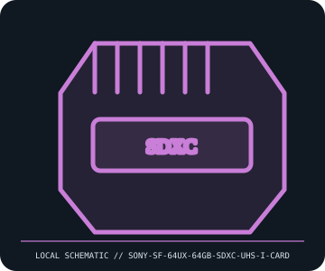

[ REMOVABLE MEDIA // MODEL-SPECIFIC RECORD ]
Sony SF-64UX 64 GB SDXC UHS-I Card
Sony SF-64UX SDXC UHS-I U3/Class 10 memory card. This catalog entry distinguishes the removable medium from its drive/reader and calls out model-specific fit and format caveats.

IDENTIFICATION: Transcribe the entire model/part number, capacity, generation and revision from the label or packaging. Confirm the exact host-device manual before inserting or writing.
Format, capacity and compatibility
| Product / part ID | Sony SF-64UX 64 GB SDXC UHS-I Card |
|---|---|
| Generation / format | Sony SF-64UX SDXC UHS-I U3/Class 10 memory card |
| Capacity and medium | Sony SF-64UX, 64 GB SDXC UHS-I card; UHS Speed Class 1 (U1) / Class 10 marking and vendor-quoted maximum reads/writes are SKU- and host-dependent. Not a UHS-II card. |
| Compatibility | Use in SDXC-compatible host. UHS-I works at supported lower SD bus modes; UHS-II reader slots are mechanically compatible but will not make this card UHS-II. Legacy SD/SDHC-only cameras may not recognize SDXC/exFAT media. |
| Version and model caveat | SF-64UX is not the same as SF-64UZ, SF-G, or other later Sony SDXC families. Check card label, host SDXC support, format, and exact firmware; printed speed-class logo is a minimum-class indicator, not a promise of a sustained transfer rate. |
Handling and preservation
Protect contacts from oils and moisture; keep in a case and avoid bending, static, and hot removal during writes. Back up before in-camera reformat and verify captured files with checksums on independent storage.
- Preserve original packaging, label, acquisition notes and any write-protect state; photograph the media before use.
- Make at least two independent copies of valuable data, verify checksums, and periodically test a restore. A removable cartridge or card alone is not an archival strategy.
Model and version notes
SF-64UX is not the same as SF-64UZ, SF-G, or other later Sony SDXC families. Check card label, host SDXC support, format, and exact firmware; printed speed-class logo is a minimum-class indicator, not a promise of a sustained transfer rate.
Standards and product-family sources establish the generation; exact model manuals, labels, regional revisions, firmware, interface and host support determine actual interchangeability.
Sources and standards
- Sony SF-64UX specificationsManufacturer SKU specification page for capacity, SDXC/UHS-I generation, and rated performance.
- SD Association — SD standards overviewOfficial explanation of SDXC, UHS, and speed-class compatibility markers.
Manufacturer and standards references are preferred; archival manuals or museum records are identified when products are discontinued. Capacity and compatibility claims are scoped to the specific SKU and generation named above.